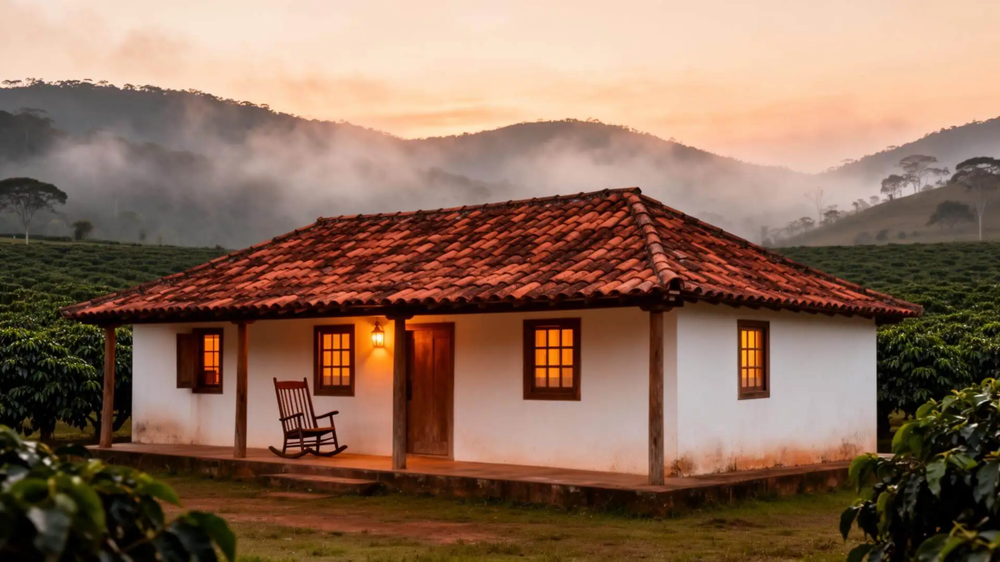
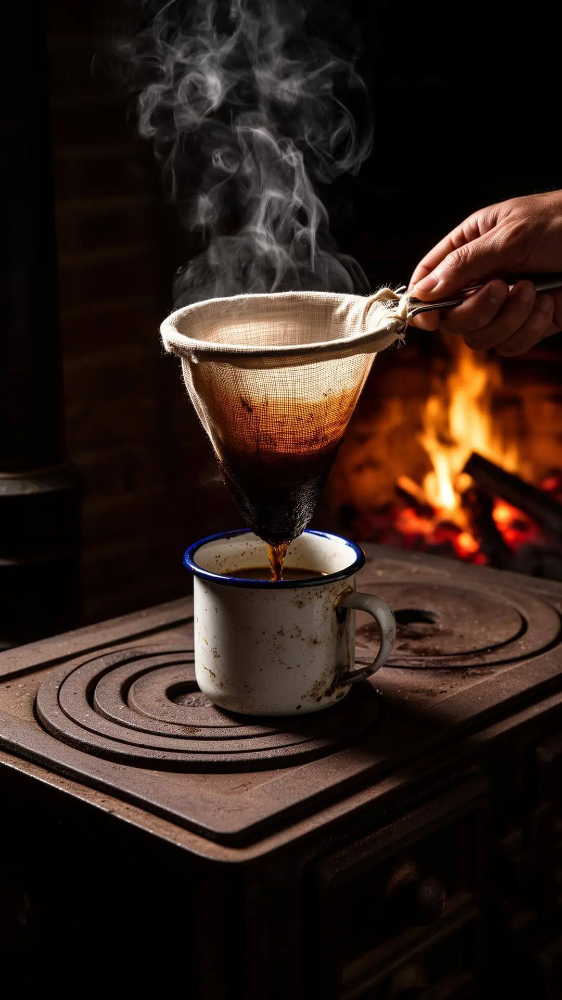
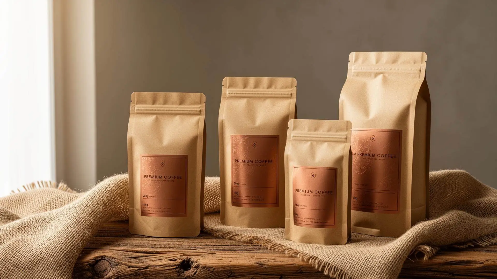
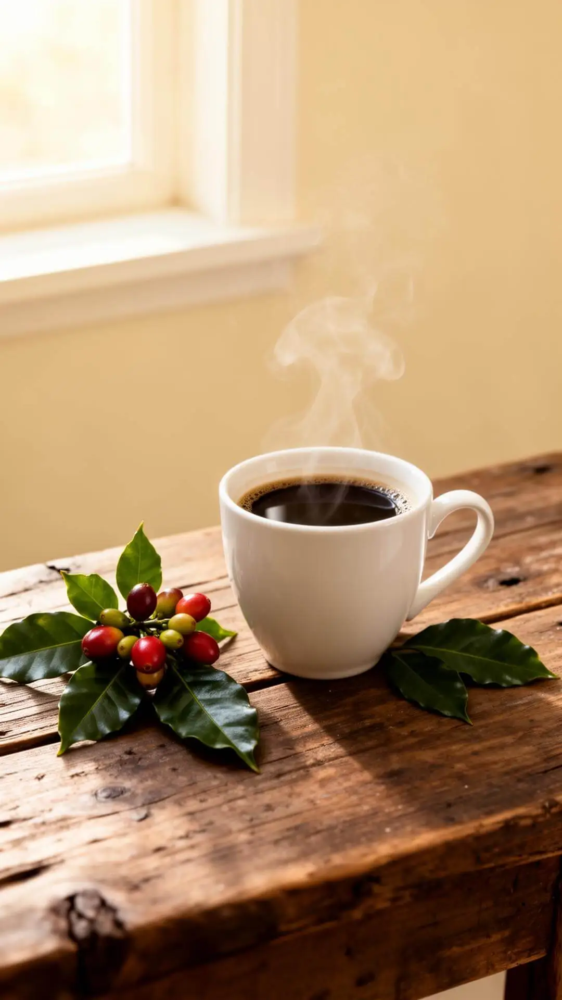

☕
Catuaí Amarelo
Caramelo, pera e castanha. Corpo médio com acidez cítrica equilibrada.
GRÃOS SELECIONADOSArábica puro cultivado a 1.250 metros nas montanhas dos Campos das Vertentes. Torrado sob encomenda. Servido com a calma de quem aprendeu o ofício no fogão à lenha.
Nas montanhas frias dos Campos das Vertentes, em Minas Gerais, cultivamos arábica puro grão a grão — com a mesma paciência das manhãs de neblina, do fogão aceso antes do sol e do café passado no coador de pano. Cada xícara carrega a memória da fazenda colonial, o aroma da terra úmida e a tradição que herdamos da família.

A Fazenda Manguelândia nasceu no coração de Minas Gerais, na região dos Campos das Vertentes — terra de relevo dobrado, clima fresco e noites frias que dão ao café o tempo necessário para amadurecer com complexidade e doçura.
A sede colonial, com seu telhado de telhas de barro e a varanda de madeira voltada para as lavouras, continua sendo o coração da propriedade. Dali se vê o terreiro de secagem, o galpão de beneficiamento e, ao fundo, as fileiras intermináveis de cafezais subindo pelas encostas.
Aqui, três gerações aprenderam que o bom café se faz com presença — a mesma presença que coloca a lenha no fogão antes do amanhecer.
Cultivamos cinco variedades selecionadas, cada uma com seu perfil sensorial único. Nossos lotes passam por um rigoroso processo artesanal de secagem e escolha manual dos grãos, garantindo uma bebida nobre, limpa e de altíssima qualidade.
Caramelo, pera e castanha. Corpo médio com acidez cítrica equilibrada.
GRÃOS SELECIONADOSPerfil achocolatado e frutado. Doçura pronunciada com notas de ameixa e mel.
GRÃOS SELECIONADOSClássico das altitudes. Complexidade aromática com frutado tropical e final longo.
GRÃOS SELECIONADOSPerfil suave e adocicado, preferido nos blends especiais de alta altitude.
GRÃOS SELECIONADOSMicrolote exclusivo. Apenas 137 sacas anuais, colhidas manualmente no ponto exato.
edição limitadaCada lote é torrado somente após o pedido, garantindo o frescor que define um café especial verdadeiro.
Encomendar agora →
Acreditamos que café especial não se faz em escala — se faz em atenção. Cada etapa do nosso processo é conduzida artesanalmente, com a paciência que apenas a tradição familiar permite.
Cada fruto colhido à mão, no momento exato de maturação ideal.
Grãos secados ao sol em terreiro suspenso por 20 a 30 dias.
Peneiragem por densidade e tamanho, eliminando defeitos.
Enviado fresco, nunca estocado. A torra acontece após o pedido.
Criamos linhas personalizadas de café especial para empresas, hotéis-fazenda, restaurantes e presentes corporativos. Embalagens premium em diversos tamanhos, com possibilidade de inserir sua logomarca em rótulos de papel artesanal e detalhes em cobre.
Solicitar proposta →

A brisa das montanhas ainda fria. O cheiro do café moído se espalhando pela cozinha da casa colonial. O silêncio quebrado só pelo canto dos pássaros.
Cada gole guarda essa memória — da terra, do tempo e do cuidado de quem cultiva com amor.
É esse café que enviamos para você.